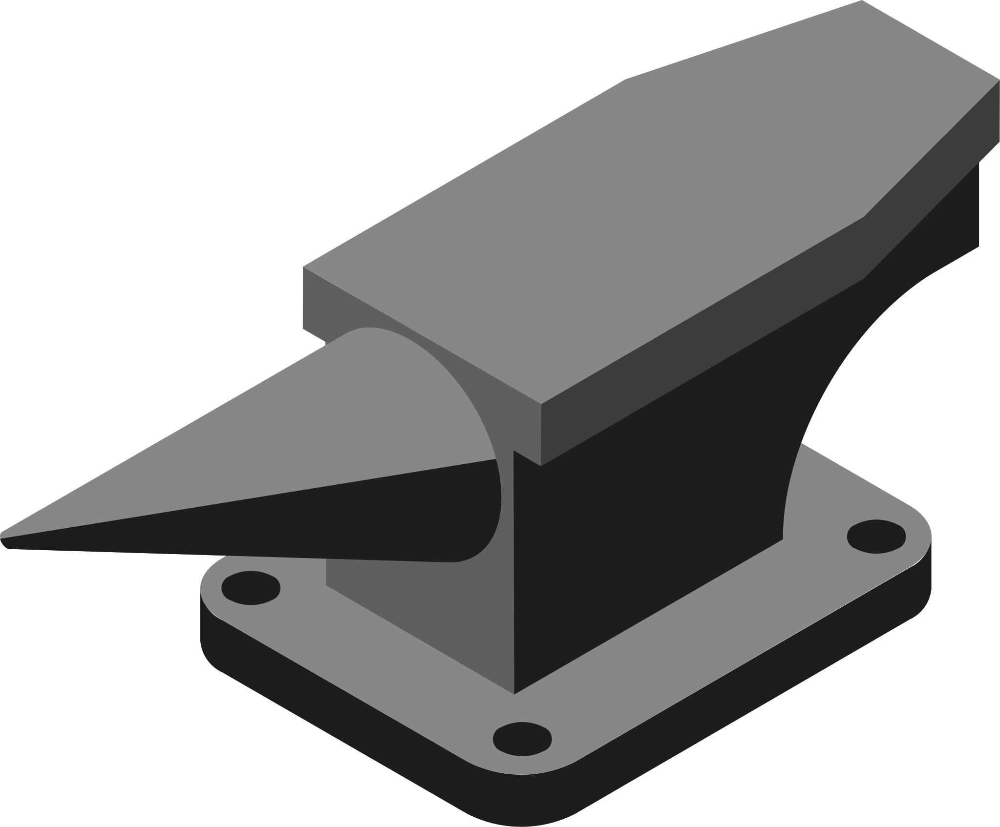

Where conda-forge came from, how to submit a recipe, and how to help review one
From compiling everything by hand to 30,000+ packages
easy_install/eggs to pip, but there was no easy way to ship pre-compiled packagesmanylinux wheels didn't exist until PEP 513 in 2016Only a few Windows .exe installers, no macOS wheels, no manylinux wheels — those didn't land until April 2016.
Wheels for all platforms.
conda 1.0 ships as a cross-platform, language-agnostic package manager for pre-compiled artifactsconda gets a SAT solver, conda build ships, Miniconda and Binstar.org (hosting for user-built conda packages) launch…at the first PyData meetup at Google HQ, where several of us asked Guido what we can do to fix Python packaging for the NumPy stack. Guido's answer was to ‘solve the problem ourselves.’ We at Continuum took him at his word… and created the conda package manager and conda environments.
Travis Oliphant, Why I promote conda (2013)
ContinuumIO/conda-recipes became the central place to contribute conda recipes — but quality varied, most recipes only worked on 1–2 platforms, and there was no CIconda-build-all); Filipe Fernandes (IOOS) borrowed it — lots of cross-pollination, but duplicated recipes and unpredictable compatibility when mixing channelsconda-forge is registered as a GitHub organization and an Anaconda.org channel
libstdc++ change; the aging CentOS 5 / GCC 4.8 toolchain made building cutting-edge projects (e.g. early TensorFlow) painfuldevtoolsetconda-build 3's compiler(...) Jinja function, the build/host/run dependency split, and dynamic pinning — funded in part by Samsung and Intel contracts with Anacondamain channel: conda-forge recipes built with the new shared toolchainpackages
active maintainers
years old (since 2015)
Your package's front door: conda-forge/staged-recipes
staged-recipes is a holding area for recipes destined to become their own feedstock — every package on conda-forge went through itmain → add a recipe under recipes/<your-package>/ → open a PR → CI builds it on Linux/macOS/Windows → review → merge<package>-feedstock repo and triggers the first buildPython packages on PyPI — grayskull pypi --use-v1-format <package>. R packages on CRAN — the conda_r_skeleton_helper script.
Anything else — copy recipes/example-v1/recipe.yaml and edit by hand, following the section order and removing the explainer comments.
context:
version: "3.8.2"
package:
name: simplejson
version: ${{ version }}
source:
url: https://pypi.org/packages/source/s/simplejson/simplejson-${{ version }}.tar.gz
sha256: d58439c548433adcda98e695be53e526ba940a4b9c44fb9a05d92cd495cdd47f
build:
script: python -m pip install . -vv
number: 0
requirements:
host:
- python
- pip
- setuptools
run:
- python
tests:
- python:
imports:
- simplejson
pip_check: true
about:
homepage: https://github.com/simplejson/simplejson
license: MIT
license_file: LICENSE.txt| Section | What goes here | Typical examples |
|---|---|---|
build |
Tools needed only while building, not on the host | Compilers, cmake, make, pkg-config |
host |
Present alongside the package at build time | Shared C/C++ libraries, python/r-base, pip, setuptools |
run |
Needed only when the package runs | Most Python/R runtime libraries |
package_contents in v1)python: test with imports: + automatic pip_check: truer: test with libraries:<tool> --help to prove it's on PATH and executableApache-2.0, not APACHE 2.0)license_file is included, unless the upstream tarball already ships oneurl:), never git_url: — tarballs are checksummable and smallerrecipes/example-v1/ folder itself untouchedMention the appropriate language team (e.g. @conda-forge/help-python) in a PR comment; first-time contributors can ask a bot to ping the team for them.
CI creates <package>-feedstock automatically, triggers the first build, uploads to anaconda.org/conda-forge, and invites you to the conda-forge GitHub org with commit rights on your new feedstock.
requirements accurate as the package's dependencies changeThe community that keeps the front door open
| Language | GitHub team | Notes |
|---|---|---|
| c/c++ | @conda-forge/help-c-cpp |
High need for reviewers |
| go | @conda-forge/help-go |
|
| java | @conda-forge/help-java |
High need for reviewers |
| Julia | @conda-forge/help-julia |
|
| nodejs | @conda-forge/help-nodejs |
|
| perl | @conda-forge/help-perl |
|
| python | @conda-forge/help-python |
|
| python/c hybrid | @conda-forge/help-python-c |
|
| r | @conda-forge/help-r |
High need for reviewers |
| ruby | @conda-forge/help-ruby |
|
| rust | @conda-forge/help-rust |
|
| other | @conda-forge/staged-recipes |
@conda-forge/core